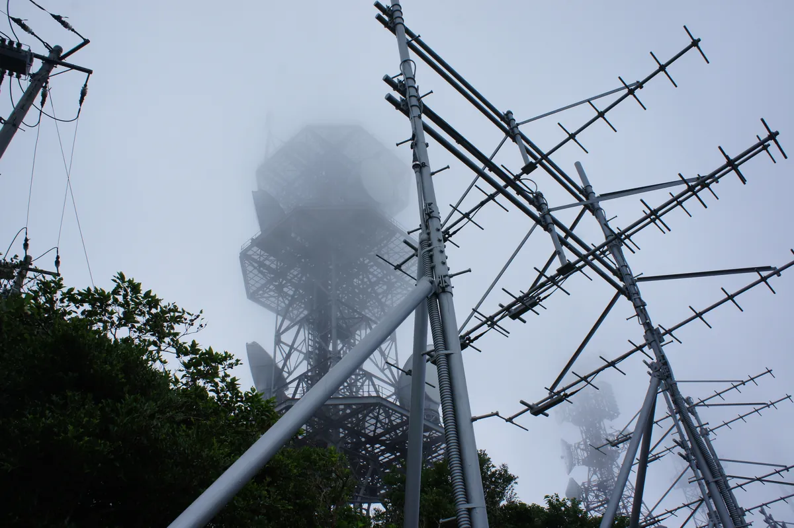

Wisconsin Repeater Coordination
Apply for a new coordination, update an existing system, or resolve interference.
Choose your path
Coordinating repeater systems across Wisconsin
The Wisconsin Repeater Alliance provides frequency coordination for amateur radio repeater systems operating throughout Wisconsin. Coordination reviews are performed by individuals authorized by WRA and operating under policies established by the Board of Directors, so that decisions are based on technical standards, engineering analysis and documented policy rather than individual preference.
What to supply
How to apply for a new repeater coordination
Have this information ready before you start. ARCS saves your application as you go, so you can finish it later. Once submitted, it enters the review process and may require additional technical information.
| Information | What we need |
|---|---|
| Station and contacts | |
| Callsign | The callsign of the repeater station. |
| Trustee | Name, callsign and contact details of the trustee responsible for the system. |
| Contact information | How WRA can reach the holder of the coordination. |
| Site | |
| Site name and address | The name and street address of the transmitter site. |
| ASR number | The FCC Antenna Structure Registration number, if the site is a commercial site. |
| Frequencies and mode | |
| Band | The amateur band the system will operate on. |
| Output and input | The proposed frequency pair. You may request a specific pair. |
| Tone | The access tone (CTCSS or DCS), or the digital equivalent. |
| Operating mode | The mode the system will use. |
| Power and antenna | |
| Transmitter power | Transmitter output power. ARCS calculates the effective radiated power (ERP). |
| Antenna height | Height of the antenna on the structure. |
| Antenna gain and pattern | Antenna gain and radiation pattern. |
| Antenna system loss | Losses between the transmitter and the antenna, from coax and filtering. |
Can I request a specific frequency pair?
Yes. Applicants are welcome to request a particular frequency pair. However, frequency assignments depend on availability, engineering considerations and compatibility with existing coordinated systems. In some cases WRA may recommend alternative frequencies that better support spectrum efficiency and interference prevention.
What happens after you apply
One process with an owner at every stage
- 01PrepareGather the required information.Applicant
- 02Submit in ARCSComplete the coordination application in ARCS.ApplicantTimeline: at your own pace
- 03Engineering analysisAfter submission, ARCS runs conflict detection studies. Once complete, your application is placed in the Coordination Review Queue.ARCSTimeline: immediately on submission
- 04Coordinator reviewIndividuals authorized by WRA review the application under policies set by the Board of Directors, and may recommend an alternative pair.WRATimeline: 5 to 10 days
- 05Decision and recordThe decision is documented in Wisconsin's coordination records. System information may appear in the public directory.WRATimeline: 5 to 10 days
How long does coordination take?
You can take as long as you need to prepare an application; ARCS saves your work until you submit. Once submitted, ARCS runs its conflict detection studies straight away and places your application in the Coordination Review Queue. Coordinator review typically takes 5 to 10 days, and the decision and record another 5 to 10 days.
Coordination times vary depending on the complexity of the request and the availability of spectrum resources. Simple applications may be processed quickly, while applications involving heavily occupied bands, large coverage areas or potential interference concerns may require additional engineering review. WRA's goal is to provide timely and thorough evaluations for every applicant.
Pre-application checklist
Tick it off before you open ARCS
Your ticks are saved in this browser. Print the list to take it to your site or club meeting.
Repeater coordination: pre-application checklist
Modify an existing system
Updating or changing an existing repeater
Significant modifications should be submitted for review before implementation.
- Site relocation
- Antenna height changes
- Power increases
- Frequency changes
- Coverage expansion
- Changes in operating mode
- Addition of linked systems
Keeping coordination records up to date helps maintain accurate data and protects both your system and neighboring systems.
Analog and digital systems
WRA supports modern amateur radio technologies and coordinates both analog and digital repeater systems, subject to available spectrum resources and technical compatibility.
Report interference
Reporting and resolving interference
If another repeater is causing interference, WRA can assist by reviewing coordination records and technical information related to the reported issue.
The Alliance encourages cooperation among repeater owners and seeks practical, technically sound solutions. Many concerns can be resolved through communication, engineering review and voluntary corrective action.
Records and renewal
Keeping records current
WRA may periodically review coordination records to ensure information remains accurate. Repeater owners may be asked to verify contact information, equipment status, operational status and technical parameters.
If a coordinated repeater will be off the air for an extended period, owners are encouraged to notify WRA so records stay up to date and spectrum is managed responsibly.
ARCS supports self-service renewals and record ownership management, so most updates can be made directly in the platform.
Your privacy
WRA is committed to protecting sensitive personal information. While certain system information may appear in public repeater directories, personal contact information and administrative records are handled in accordance with Alliance policies and applicable privacy requirements. Read the Privacy Policy.
Have a question before you apply?
Our team is happy to help you understand the process and what you'll need.